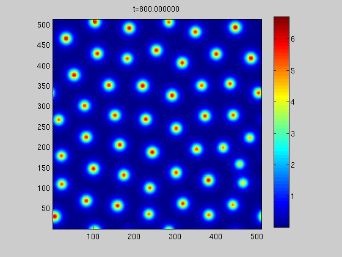
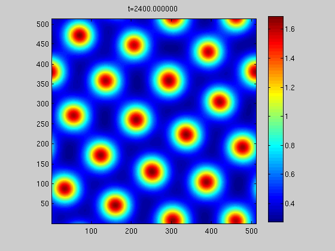

Some class projects that were particularly interesting.
I compare two common techniques to compute matrix factorizations for recommender systems, specifically using the Netflix prize data set. Accuracy, run-time, and scalability are discussed for stochastic gradient descent and non-linear conjugate gradient. pdf
This was a part of a homework assignment from Jake Hofman's Data-driven Modeling course. Task: given the text of an article from the New York Times, predict the section to which the article belongs. First step was registering for the NYT developer API and using it to get articles. The classifier was able to produce greater than 90% accuracy on a withheld test data set. The assignment. My answer.
TODO: code on github
I study a continuous formulation of the so-called N-k problem: given a power grid, find a small set of lines whose failure will cause maximum damage. Instead of removing lines from the grid, I consider increasing their impedance continuously, and attempt to maximize the resulting disruption to stable voltages. For all test cases, I show that a fast and simple first-order optimization method finds the same set of lines as more sophisticated techniques. pdf
The evolution in space and time of crime risk and criminal density is modeled by a coupled system of partial differential equations, and solved with a semi-implicit method using finite differences. Under appropriate conditions, isolated stationary hot spots of high criminal activity form. pdf
UPDATE 12-19-2010: I did more stuff
I was playing with this more over the weekend and implemented the spectral methods we said we'd try next. They work well, and about three times faster than the finite differences we used before. I then found parameters to get different size hot spots like in the Short paper. Attached are images of the different sized hot spots and the new code, which fits on a single screen.
 
We didn't mention this in our paper, but when we coded it up, we used the notation from the other Short paper which we didn't reference. It's equivalent but looks a little different in a couple spots.
Here are animations:
code (matlab)
I solve the netflix problem on a distributed memory machine using MPI and alternating least squares. pdf